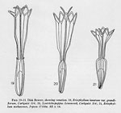
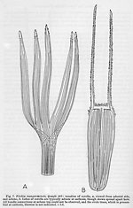
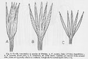
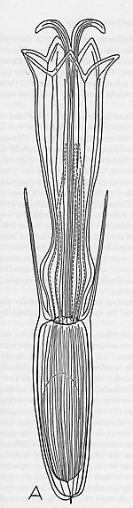

|
 |

{kind=link}

{kind=link}

{kind=link}

{kind=link}
FLORAL ANATOMY
Floral Anatomy [ — PDF may be available at these external sources: Wikidata. ]
How I killed vascular conservatism. I knew that there was something wrong. I suppose you could say indirectly it was a result of the lab in Herbert Mason’s “Phylogenetic Taxonomy” course. The lab was a play period, in which we were invited to do things with flowers he brought in. We all cleared some flowers, cut some sections, etc. Knowing how to clear flowers (a technique popular in the 1950s at Berkeley) to look at their venation, I cleared flowers of Fitchia and other composites. There was certainly some diversity in the Asteraceae I was studying. Studies I did on Eriophyllum and allied genera, begun when I was an undergraduate, showed simplified flower venation patterns, much like those of the vast majority of Asteraceae. Fitchia, which I studied for my Ph.D. thesis, had the most complicated venation I had ever seen in a composite (so did some of the Guyana mutisioids I studied during my postdoc year at Harvard). The Guyana mutisioids might be ancient relicts, I didn’t know, but why should the most complication venation in helianthoids occur on Mangareva in F. mangarevensis? More complicated than that of the other species of Fitchia even. Mangareva is a recent volcanic island, not likely to be the site for preservation of ancient Heliantheae. In my studies of composites possibly related to Fitchia, I looked at the ordinary wild sunflower. Also some sunflowers that aren’t so ordinary—sunflowers cultivated for their seeds have giant flowers. The cultivated sunflowers had floral venation much more complicated than that of wild sunflowers. This couldn’t be retention of an ancient condition, the venation of cultivated sunflowers, which have been developed in rather recent time, had to be secondary. If additional veins could originate so easily within a single species, Helianthus annuus, couldn’t additional veins happen elsewhere?
Actually, the way that Arthur J. Eames and his numerous M.A. and Ph.D. students at Cornell treated flowers, flowers weren’t so much functional structures as museums, supposed to tell people what primitive conditions in flowers were, and, when lined up in a series, how veins were lost and changed. Changes I could believe, but why should flowers always get smaller and smaller, and lose veins? Shouldn’t flowers get bigger as often as they got smaller? Shouldn’t venations change in response to both trends? Why should veins be such infallible indicators of history? Maybe vertebrate skeletons showed stages of evolution, maybe teeth did, maybe embryo structures did, but was Eames trying to apply such ideas to plants, where such ideas were clearly inapplicable? I thought so. Cornell was a famous school, Eames had had so many students—there was a sort of cumulative credibility that had nothing to do with scientific truth, only with academic degrees. I had published little on flowers before 1969, but I thought the situation was simple. I was a solitary plant anatomist out on the West Coast, and I had no academic tradition in plant anatomy behind me. So what? Eames was wrong. I wouldn’t have said so in print while he was alive, but soon after he died, I did conceive the paper that became “Toward acceptable evolutionary interpretations of floral anatomy.” In the paper, I said I was aiming toward “a more active demolition” of ideas of vascular conservatism in plants. Yes, I was a radical.
I didn’t carry the ideas as far as they could go, but by implication I showed that flowers such as those of Magnolia, Nelumbo, and Nymphaea were gigantisms, not primitive in all or most respects, and that the numerous veins in these flowers were merely related to the size increase. Size increase had ecological components such as shift in pollinators, seed dispersal, and other factors. Increase in size and number of parts in a flower like Magnolia is related to beetle pollination and the way beetles destroy flowers in the course of visiting them. Those extra veins in flat stamens in some supposedly primitive genera (Degeneria) were not vestiges of leaflike structure in stamens of ancient angiosperms. I didn’t say which genera represented increase in venation because of gigantism of flower parts, and I was wise in not doing so (or so I can say in retrospect). The moment in time when one could say which flowers were primitive and why was not yet at hand because DNA-based phylogenies were required in order to give the information needed.
The giant debate over the crucifer carpel by those who believed in vascular conservatism was funny, I said. I thought that the ovary bundles adjacent to ovules in crucifers had “inverted” orientation because that way the phloem was adjacent to the ovules and entered them, and that made sense in turns of carbohydrate input to ovules and developing seeds. Those drawings in a number of papers, showing how carpels in crucifers had done peculiar things, shown in series of pen and ink drawings, were all in vain, I said. They were speculative drawings, with no evidence (or even likelihood) that they had ever existed, and no evidence of why intermediary stages would have been adaptive.
Maheshwari was reluctant to accept my paper for Phytomorphology, the journal he edited at that time. He pointed out that the reviewers disagreed with me, and I wrote him saying, yes, they disagreed, but my paper is an editorial, shouldn’t I be allowed to voice an opinion? He agreed to publish it. Not surprisingly, several professors who had gone on record supporting vascular conservatism wrote papers trying to discredit mine. Kenneth Wilson at Dartmouth and F. Maynard Moseley at UCSB, both students of Eames, wrote such papers. And so did B. G. L. Swamy, who had studied at Harvard with Bailey and co-authored some papers with Bailey (although I don’t think that Bailey ever really believed in the vascular conservatism interpretations, he just never got involved). Swamy was a member of the Indian Academy of Sciences, and Darmouth and UCSB are supposed to be prestigious institutions, whereas I was a youngster associated with young institutions and programs. Stories are told of how F. Maynard Moseley exploded in the hall of Noble Hall, on the UCSB campus, incensed that the idea of vascular conservatism should be not merely disbelieved, but attacked. (To me, that story shows that Moseley realized that vascular conservatism was doomed, otherwise why would he have felt so threatened?). My paper was cited frequently in the years following 1969 and then, as its tenets became accepted, the need to cite it vanished. When something is accepted in science, there is no need to pay attention to it any more. I could have written more papers on floral anatomy. I could have shown, for example, how phloic bundles in nectaries relate to secretion of sugars, and absence of xylem in those bundles is not a reduction, but mere economical construction. I could have correlated the anatomy of various floral structures with their function. But I had made my point, and from that moment on, citation of bundles as indictors of phylogenetic history has withered and almost completely vanished. Would vascular conservatism have died if I had not written my somewhat pointed editorial? Sure, but the bigger point was always to look for the form-function correlation as the most probable explanation for structures, because angiosperms are rapid in evolution. Angiosperms tend to retain few structures simply as historical vestiges.
I could have gone further with questioning of the meaning of venation patterns. For example, Zimmermann, in his “telome theory,” then believed by many professors and their students, alleged that forking veins were ancient, and that networks of veins were derived. One could find “traces of ancient dichotomies” in vascular plants. I remember that Adriance Foster, who taught me plant anatomy at Berkeley, was fascinated by the possibilities that ancient dichotomies might exist. He cleared with great care leaves of Kingdonia, essentially an alpine relative of Ranunculaceae from Asia, because the veins in them had dichotomous branching. One can, however, find dichotomous veins in petals of Yucca, Calochortus, and assorted other species. Dichotomous veins, the shapes of areoles in leaves, and the tendency toward parallel veins in leaves of some plants, have functional patterns related to the way that leaves and petals grow and develop. Not surprisingly, parallel veins in monocotyledon leaves can be related to basal meristems and other correlated factors (narrow leaf form). The tendency toward dichotomous veins in petals can be related to rapidity of unfolding, greater spread of distal parts of petals than basal parts during unfolding, etc.
I’d like to take credit for the demise of vascular conservatism, but there are other factors that prevent anyone from taking seriously the ideas on floral venation evolution that one saw in journals between 1920 and 1960. DNA evidence. DNA-based phylogenies, with their high degree of probability, must now be considered the backbone for interpretations of how structures evolved. That changes morphology and anatomy considerably as compared to what it has been in earlier decades. If we now know that Psilotum is a eusporangiate fern instead of a survivor of Devonian psilophytes, we can interpret the structure of Psilotum quite differently from the way that telome-theory adherents did. Morphology and anatomy now tell us about structural constraints on how plant structures develop and operate in order to fulfill functions. Different lineages of plants will have achieved vastly different products, but they are moving toward economical function that often tends to erase traces of ancestral adaptations.